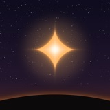

Nightvane: Ver las estrellas


Levanta tu iPhone o iPad hacia el cielo nocturno y Nightvane te muestra lo que estás mirando: estrellas, planetas, constelaciones, la Luna y la Vía Láctea, justo donde están.
ESTA NOCHE
• Una lista breve de lo que vale la pena ver esta noche desde donde estás, con la hora y la dirección para mirar.
• Pasos visibles de la Estación Espacial Internacional y de Tiangong.
• Lluvias de meteoros, el núcleo de la Vía Láctea, cúmulos y galaxias brillantes.
• Fase lunar, salida y puesta de la Luna, la próxima luna llena y los próximos eclipses lunares.
ENCUENTRA EL CAMINO
• Más de 9.800 estrellas, las 88 constelaciones y el catálogo Messier.
• Busca planetas, estrellas con nombre, constelaciones y objetos de cielo profundo.
• Una flecha y una vibración suave te llevan a cualquier objeto.
• Toca una estrella o un planeta para ver sus horas de salida y puesta y su brillo, y la distancia de los planetas y de la mayoría de las estrellas con nombre.
PENSADA PARA CIELOS OSCUROS
• La visión nocturna roja mantiene tus ojos adaptados.
• ¿La brújula falla? Alinea una vez la Luna o una estrella brillante para corregirla.
• Muévete en el tiempo para ver el cielo a cualquier hora o fecha.
• Elige cualquier ciudad para ver su cielo en su hora local.
En iPhone Duo, el cielo ocupa una página y la lista de esta noche o los detalles, la otra.
Gratis con anuncios; una compra única los elimina. Sin suscripción ni cuenta.
Publicidad: un banner aparece en las listas Esta noche y Buscar; al cerrarlas puede aparecer un anuncio a pantalla completa, como máximo una vez cada cuatro minutos y nunca en tu primera sesión.
Soporte: https://easonwumac.github.io/starplace/support.html
Privacidad: https://easonwumac.github.io/starplace/privacy.html
Créditos: imagen de la Vía Láctea «The Milky Way panorama», ESO/S. Brunier (modificada), y nombres de estrellas del IAU Catalog of Star Names (IAU WGSN; selección, con distancias de Wikidata), ambos con licencia CC BY 4.0: creativecommons.org/licenses/by/4.0
Preguntas frecuentes
¿Qué app identifica las estrellas cuando apunto mi iPhone al cielo?
Apunta un iPhone o iPad al cielo en Nightvane y te muestra estrellas, planetas, constelaciones, la Luna y la Vía Láctea en su posición correcta. Es gratis.
¿Qué puedo ver en el cielo esta noche?
La lista Esta noche de Nightvane muestra lo que vale la pena ver desde tu ubicación, con horas y direcciones, incluidas lluvias de meteoros, pasos de la Estación Espacial Internacional, fases lunares y eclipses.
¿Cómo encuentro el radiante de una lluvia de meteoros?
Busca la lluvia en Nightvane; las flechas y una vibración suave te guían hacia el radiante y te indican cuándo sale esta noche.
¿Cómo sé cuándo pasa la Estación Espacial Internacional sobre mí?
La lista Esta noche de Nightvane muestra los pasos visibles de la Estación Espacial Internacional y de Tiangong para tu ubicación, junto con los objetos que vale la pena ver y hacia dónde mirar.
Mi teléfono es demasiado brillante para observar las estrellas. ¿Qué puedo hacer?
Nightvane tiene un modo de visión nocturna en rojo que mantiene tu adaptación a la oscuridad; si la brújula no es precisa, apunta a la Luna o a una estrella brillante una vez para calibrarla.
¿Nightvane es gratis?
Sí, con anuncios; una compra única los elimina. No hay suscripción ni necesitas una cuenta.
Guías
App Store · 繁體中文 · English · 简体中文 · 日本語 · 한국어 · Français · Deutsch · Eason Wu Apps